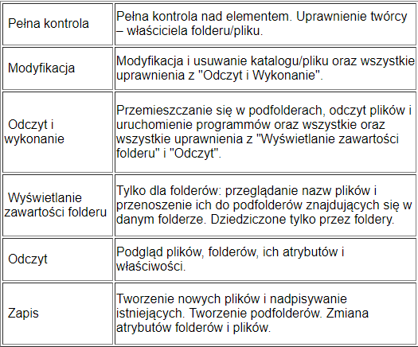

System Plików NTFS
System plików NTFS umożliwia bardzo szczegółową kontrolę dostępu do danych i nadawania, bądź odmawiania, użytkownikom i grupom użytkowników praw do odczytu, wykonywania, modyfikacji folderów i plików.Z założenia uprawnienia NTFS służą do zarządzania dostępem do folderów i plików lokalnych. Uprawnienia do zasobów sieciowych (udostępnianie) są wypadkową uprawnień NTFS i zasad sieciowych.
-------------------------------------------------------------------------------------------------------------------------------------------------------------------------------------------------------------------------------------------------------------------
Uprawnienia NTFS zorganizowane są w strukturę hierarchiczną (drzewo). Obiekty potomne (np. podfoldery) dziedziczą uprawnienia z obiektów nadrzędnych (w których się znajdują). Umożliwia to płynne i bezkonfliktowe przejście przez całą struktorę katalogów i plików.
-------------------------------------------------------------------------------------------------------------------------------------------------------------------------------------------------------------------------------------------------------------------
Uprawnienia mogą być nadawane konkretnym użytkownikom jak i ich grupom. Wypadkowe uprawnienia są sumą uprawnień użytkownika i grupy/grup, do jakich przynależy.
-------------------------------------------------------------------------------------------------------------------------------------------------------------------------------------------------------------------------------------------------------------------
Uprawnienia mogą być nadawane "Zezwól" bądź odbierane "Odmów". Odmawianie uprawnień służy odbieraniu praw użytkownikowi/grupie w sytuacji, gdy z dziedziczenia lub przynależności do innych grup posiada/posiadają oni dostęp do danych zasobów. Odmawianie uprawnień ma wyższy priorytet (jest ważniejsze) niż zezwalanie.
-------------------------------------------------------------------------------------------------------------------------------------------------------------------------------------------------------------------------------------------------------------------
System plików NTFS umożliwia bardzo szczegółową kontrolę dostępu do danych i nadawania, bądź odmawiania, użytkownikom i grupom użytkowników praw do odczytu, wykonywania, modyfikacji folderów i plików.
-------------------------------------------------------------------------------------------------------------------------------------------------------------------------------------------------------------------------------------------------------------------
Z założenia uprawnienia NTFS służą do zarządzania dostępem do folderów i plików lokalnych. Uprawnienia do zasobów sieciowych (udostępnianie) są wypadkową uprawnień NTFS i zasad sieciowych
-------------------------------------------------------------------------------------------------------------------------------------------------------------------------------------------------------------------------------------------------------------------
Uprawnienia NTFS zorganizowane są w strukturę hierarchiczną (drzewo). Obiekty potomne (np. podfoldery) dziedziczą uprawnienia z obiektów nadrzędnych (w których się znajdują). Umożliwia to płynne i bezkonfliktowe przejście przez całą struktorę katalogów i plików
-------------------------------------------------------------------------------------------------------------------------------------------------------------------------------------------------------------------------------------------------------------------
Uprawnienia mogą być nadawane konkretnym użytkownikom jak i ich grupom. Wypadkowe uprawnienia są sumą uprawnień użytkownika i grupy/grup, do jakich przynależy.
-------------------------------------------------------------------------------------------------------------------------------------------------------------------------------------------------------------------------------------------------------------------
Uprawnienia NTFS w Windows 10 -------------------------------------------------------------------------------------------------------------------------------------------------------------------------------------------------------------------------------------------------------------------
